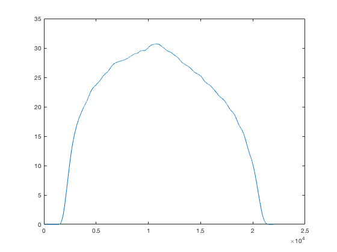

The folder RPCH_JNP17 has the code needed to recreate Figure 5 of:
Powers RK, Heckman CJ. Synaptic control of the shape of the motoneuron pool input-output function. J Neurophysiol. 2017;117(3):1171-1184.
First compile the mod files by navigating to the folder and typing: nrnivmodl
If you then type init.hoc, this will bring up the code needed to produce triangular excitatory and inhibitory conductance inputs. The total length of the command is specified by the parameter TR (default = 20000 (ms)), and the delay before the start of the input is specified by DEL (1000). SLOPE1 specifies the rate at which the excitatory command rises and falls and SLOPE2 specifies this for the inhibitory command. Both commands can start from an offset specified by RSTRT1 and RSTRT2. The default values are specified in init.hoc
There are three folders with cell parameters for pools of 20 motoneurons (FivecomptcMG, FivecompthTA, FivecompthTAlw). FivecomptcMG has parameters appropriate for medial gastrocnemius motoneurons studied in the decerebrate cat. The other two folders have parameters that have been modified to better recreate the discharge patterns of human tibias anterior motoneurons. To produce motoneuron outputs for all the models in a pool in response to a given command type:
batchrunpool("model pool","output",nmn, scale), where model pool specifies the cell parameters to be used, output specifies where the spike times are to be written, and scale is a scaling factor for the relative density of dendritic L-type Ca channels.
To recreate the Figure 5 results and write spike times to a folder called results set SLOPE1=0.003, RSTRT1=0, RSTRT2=1.5, SLOPE2=1e-7, TR=20000 and DEL=1000. Then type:
batchrunpool("cMG","results/t",20,1.0)
This command also writes the average firing rate of the whole pool (Figure 5C) into a file called avrate.txt. For example matlab commands
load avrate.txt
plot(avrate)
generate a similar plot:

In addition, if you wish to recreate the firing rate response in Figure 3, you can turn the conductance input off and load files needed to apply a triangular current clamp as follows:
grampoff() //this turns off the conductance command
tstop=12000
xopen("cc_command.hoc")
xopen("FivecomptcMG/FivecomptcMG_9/FivecomptcMG_9.hoc") //medium threshold motoneuron
TR=12000 //duration of current clamp in Figure 3
IClamp[0].dur=12000
simple()
rampon() //these two commands generate the current waveform and turn on the current clamp
run()
To make new cell parameter folders, modify the ".csv" file in one of the folders, copy the new file to another folder, navigate to the folder and type pars2manyhocs.py + the name of your csv file. For Macs the program pars2manyhocs.py needs to be in your bin folder.